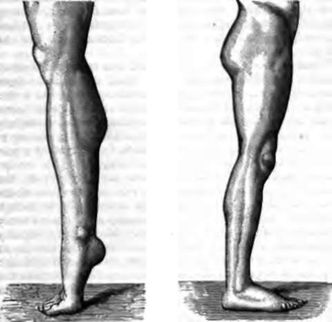

Locomotion
Description
This section is from the book "Wonders Of The Human Body", by Auguste Le Pileur. Also available from Amazon: Wonders of the Human Body.
Locomotion
Man moves over the surface of the ground by three principal methods of progression—walking, running, and leaping; but the point of departure is always the vertical position. In this attitude, which characterizes the human race, the equilibrium of the head upon the vertebral column, and that of the trunk upon the coxo-femoral articulations, and of the thighs on the legs, is independent of all muscular contraction, the ligaments being sufficient to insure it And farther, the muscles of the neck, of the trunk, and of the thigh maintain the rigidity of the spinal column, oppose or prevent the flexion of the knee, and restore the equilibrium when it is compromised, while the muscles of the leg prevent the flexion, anterior or posterior, of the tibio-tarsal articulation, the surfaces and ligaments of which only permit an unstable equilibrium of the body upon the feet lastly, the feet, separated from each other by a distance equal to that which divides the heads of the femurs, complete the mechanism by which man alone, among all living beings, stands erect with his face placed vertically, and on a plane parallel to that of the body, but not turned toward heaven, as has been poetically said.
Fig. 20. The leg in standing. The foot resting the toes on The foot resting flat on the the ground.
In the attitude of a soldier without arms, with the heels touching each other, and the feet forming nearly a right angle, a stronger contraction of the muscles of the leg is necessary, and consequently fatigue is sooner induced. When resting on one foot only the body departs laterally from the vertical and leans a little backward, the leg which supports only its own weight rests on the ground, with the muscles completely relaxed, acting as a support and counterpoise This attitude when standing is the least fatiguing, firmest, and also the most elegant; it is the one preferred by painters and sculptors, and was considered by Leonardo de Vinci as the most natural.
When the body moves it is divided into two quite distinct sections: the one, comprising the head, trunk, and upper limbs, representing the mass to be transported; the lower limbs are at once the movable supports of the superior parts of the body, and the agents of propulsion which communicate to them the movement of translation. In all movements of this nature the trunk inclines forward at an angle which varies according to the quickness, from 50 7' in the slowest walk to 220 5' in the fastest running. From this position there is a constant tendency to fall forward, which is neutralized by the moving of the lower limbs in such a direction as that the heads of the femurs shall always serve as the point of support for the body. M. Longet compares this unstable equilibrium of the body upon the femurs to that of a rod on the end of a finger, so inclined that the only means to prevent its fall is to carry the finger forward in the same direction as the inclination, more rapidly as this inclination becomes greater.
By their alternate flexion and extension the lower extremities give an impulsion to the trunk, they lengthen and contract in a direction inclined to the horizon, since it is forward and not vertically that they push the body; the result is that the centre of gravity sinks toward the ground just in proportion to the rapidity of the mode of progression.
Each extremity props itself by turns on the ground, and then the impulse being given the knee bends, the heel rises, the foot is lifted, the limb, shortened by flexion and suspended from the pelvis, is directed from behind forward, and is again placed upon the ground.
In this movement the leg, according to the brothers Weber, represents a pendulum which bends and oscillates by its weight alone; according to M. Duchenne (of Boulogne), it obeys the contraction of the flexor-muscles.
The experiments of the Webers having demonstrated, as stated above, that the head of the femur is retained in the cotyloid cavity by atmospheric pressure alone, these skilful observers conclude that in the second movement in walking the weight of the thigh alone determines the flexion of the joints and the oscillation of the three segments of the pendulum, which is then represented by the lower extremity. Basing his opinion on pathological observation, M. Duchenne thinks that the contraction of the flexors of the thigh, leg, and foot is the real cause of the second movement of the extremity in walking, and that the action of weight contributes very little to it. According to M. Beclard, the tonicity of the flexor-muscles, developed by extension, suffices for seconding the pendulum movement of the lower limb.
In walking the body advances without ceasing to rest upon the ground, and by effecting a succession of movements, which are divided in each step into two principal ones. First,—the body rests upon the two lower limbs; the right leg, placed behind and inclined to the horizon, touches the ground at the extremity of the metatarsus and at the toes, it stretches out, and the foot is raised to an angle of forty-five degrees; now the left limb is placed forward, resting on the ground on its sole, the knee is a little bent, the heel exactly under the head of the femur, and the trunk slightly inclined forward. Secondly,—the left leg alone supports the weight of the body; it lengthens by extending the knee and straightening the foot; its direction inclines to the horizon, and the body pushes itself forward, while the right leg is raised from the ground by bending the knee, follows the movement of translation given to the body, executes half an oscillation, and touches the ground, first at the heel, which places itself exactly under the head of the femur, and then on the sole of the foot on which the body rests.
To accelerate his movement man inclines more forward, the centre of gravity falls nearer to the earth, and the flexion of the limb placed behind is greater, the pendulum is shorter and its oscillation more rapid; at the same time the greater flexion gives more force to the extension, and the impulsion forward is increased; and more still, extension acts in a direction still more inclined, which results in a lengthening of the step. The motion is also increased by the extension of the leg resting on the ground while the other oscillates, in such a way that when the latter touches the ground the former detaches itself in order to swing in its turn. In walking quickly the body rests upon the ground only by one foot at a time.
When walking, and especially when walking rapidly, the arms accompany with their isochronous oscillations the movements of the lower limbs, and contribute to maintain the equilibrium: indeed it is next to impossible to walk quickly when the arms, from any cause whatever, cannot oscillate.
According to the experiments of the brothers Weber, the speed of a man of ordinary stature is, in rapid walking, about 10,267 yards per hour. This speed could not long be maintained, and must be considered as exceptional. In ordinary walking the speed is nearly four miles an hour, and can be kept up for a long period But exercise and a special aptitude for it enable some men to walk great distances in a relatively short space of time. Trained walkers have gone seventy-five miles in twenty hours, and walked the distance of thirty-seven miles at the rate of five miles an hour. The mountaineers of the Alps are generally good walkers, and some of them are not less remarkable for endurance than for speed. Jacques Balmat, who was the first to reach the summit of Mont Blanc, at sixteen years of age could walk from the hamlet of the Pelerins to the mountain of La Cote in two hours—a distance which the best trained travellers required from five to six hours to get over. At the time of his last attempt to reach the top of Mont Blanc, this same guide, then twenty years old, passed six days and four nights without sleeping or reposing a single moment One of his sons, Edward Balmat, left Paris to join his regiment at Genoa; he reached Chamonix the fifth day at evening, having walked 340 miles. After resting two days he set off again for Genoa, where he arrived in two days.
Several years afterward this same man left the baths at Loueche at two o'clock in the morning, and reached Cha-monix at nine in the evening, having walked a distance equal to about seventy-five miles in nineteen hours. In 1844 an old guide of De Saussure, eighty years old, left the hamlet of Prats in the valley of Chamonix in the afternoon, and reached the Grands Mulets at ten in the evening, then after resting some hours he climbed the glacier to the vicinity of the Grand Plateau, which has an altitude of about 13,000 feet, and then returned without stopping to his village.
We will cite in addition the performance of a man from Thun, who walked in September, 1867, a distance estimated at forty Swiss leagues in twenty-three hours, representing at least thirty-four hours of walking for ordinary travellers.
Continue to:
- prev: Effort For Motion
- Table of Contents
- next: Running